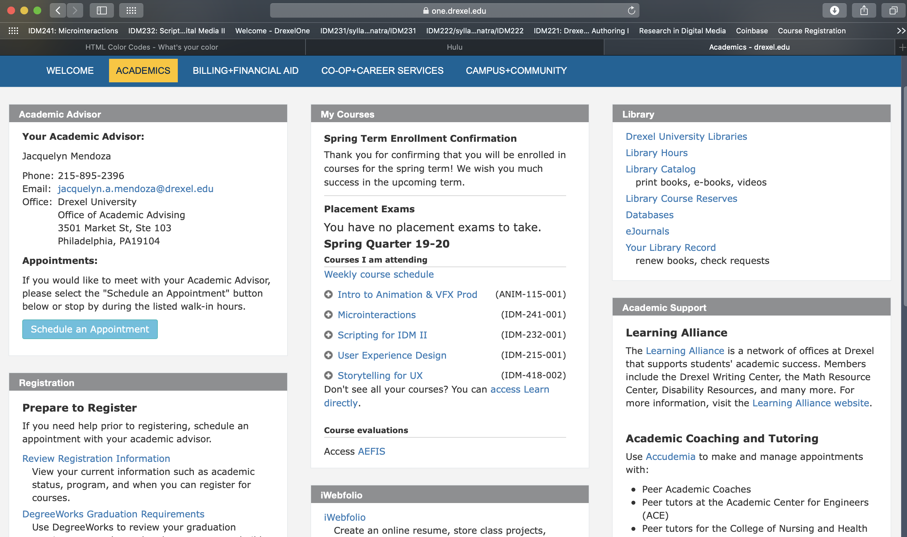

Microinteraction Alpha IDM241
URL:
https://one.drexel.edu/web/university/academics (as a teacher the portal probably appears different)
Current State Intro:
In its current state the schedule an appointment button only changes the mouse pointer to a clicker. It currently has no hover state or on click interaction which makes this an ideal candidate for a simple microinteraction.
Current State Images:

Triggers:
While the mouse hovers over the button it starts the microinteraction and when the mouse leaves the button the interaction stops.
Rules:
While mouse hovers the button should change color and text color. A Drexel gold (#FFC600) and navy (#07294D) text should work well. When mouse stops hovering it should transition back to the original color
Feedback:
On hover the user will see the button change color seamlessly from the current blue to gold and the text color change so there is solid contrast between button color and text color. It will blend between colors over time so it isnt just one color changing to the other.
Loops and Modes
N/A.